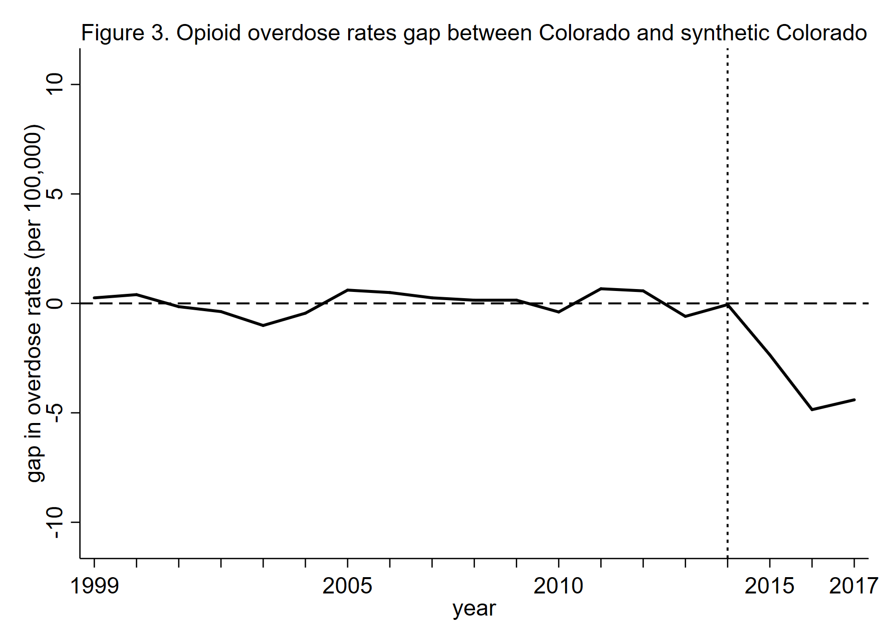
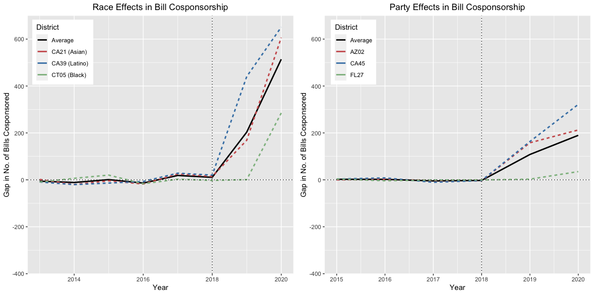

Opioid overdose death rates have continued to spike exponentially
from the start of the 21st century, creating what is known to be one
of the worst public health crises in the United States. Simultaneously,
as more states began passing medical cannabis laws (MCLs), the idea
that marijuana was the solution to the opioid crisis began to spread
nationwide. As some states have maintained strict medical marijuana
policies, others—such as Colorado—have expanded their statutes to
allow recreational marijuana sales within their state. Researchers
have been able to provide sense of the public health implications
resulting from MCLs, but little is known about the effects of this
marijuana policy expansion. This preliminary study will focus on
exploring the statewide effects of Colorado's recreational marijuana
policy on the state's opioid overdose death rates.
Because Colorado has existing panel data for opioid overdose death rates,
we can use statistical software to define and create an optimal control
group to adequately resemble Colorado's outcome variable of interest.
This process known as the synthetic control method can provide a valid
counterfactual for Colorado's opioid overdose outcomes in the absence
of this policy—a Colorado that did not expand marijuana policy to the
point recreational dispensaries were established.
Opioid overdose death rate data from the Centers for Disease Control
and Prevention's Wide-ranging Online Data for Epidemiologic Research
(WONDER) will be used to construct a synthetic control unit composed
of a donor pool of states resembling Colorado's regulatory environment
pertaining to marijuana before legalization. The synthetic control unit
allows for a comparative observation of overdose rate trends in Colorado
and its synthetic counterpart for the years 1999–2017, all while
including a set of predictor variables for robustness checks. A
difference-in-difference estimate will then help us observe the effects
of the treatment given to Colorado. Inference tests will be conducted
to evaluate the method's predictive power and significance of the results.
The results of the synthetic control model and its outcomes showed
that the estimated negative 5% drop in overdose death rates was deemed
insignificant on conducting a placebo in-space analysis, meaning there
is not enough evidence to prove that opening recreational dispensaries
as a result of recreational marijuana legislation was instrumental in
reducing Colorado's ongoing opioid crisis depicted through opioid
overdose deaths.

Identity Legislating:
Examining the Effects of Race on Legislative Activity Through Bill Cosponsorship. June 2022.
As congressional diversity continues to increase, it is important for the
study of Representation to understand how racial identity can impact
representation. This study contributes to the literature by examining the
differences between minority representatives’ legislative activity in
comparison to their non-minority counterparts. I apply the synthetic control
method to 11 districts that had racial turnovers during the 2018 midterm
elections in order to construct counterfactual districts and examine the average causal
effects of race on bill cosponsorship. I find that legislators of color
significantly cosponsor more bills than white legislators, contradicting
previous studies observing this relationship. Upon conducting a difference-in-differences,
the average effects of having a minority legislator in office led to an estimated increase of
116 bills cosponsored. Running the method's inferential permutation tests using bootstrapped samples
of the control districts showed that the average effects observed were significant and extremely
unlikely to be due to random chance.

Gendered Discourses: Are
Female Legislators Better Communicators? March 2022.
This paper explores the concept of 'gendered vulnerability' posited by
Steigerwalt and Lazarus (2018) and extends it beyond legislative activity.
I argue that congresswomen are more driven to establish legitimation
through speech in order to secure reelection stability. In turn, I expect
congresswomen's messages to be more polished than congressmen's messages.
I collect congressional Twitter data across 5 years and calculate both
readability and lexical diversity scores to convert them into dependent
variables. I then run multivariate regression models to observe the
effects of gender on these measures of communication. As a robustness
check, I use an unsupervised machine learning topic model (LDA) to
separate political speech over nonpolitical speech and compare how both
types of tweets fare in these variables across female and male legislators.
Perceiving Tweets. Can
Twitter Trends Influence Agenda Setting? November 2021.
Is social media an effective advocacy tool? Do legislators perceive
social media as a reliable platform to learn about public opinon? Does
complex contagion translate into the online world through the use of its
performance metrics (i.e., likes, retweets)? The goal of this paper is to
understand these questions through the use of a survey experiment on local
elected officials across the U.S.
Assessing Presidential
Influence on Congressional Setting? October 2021.
An abstract will be added as I progress more into this paper.
Tweeting Your Legislator.
Strategic Use of Twitter to Increase Legislative Responsiveness
September 2021.
An abstract will be added as I progress more into this paper.